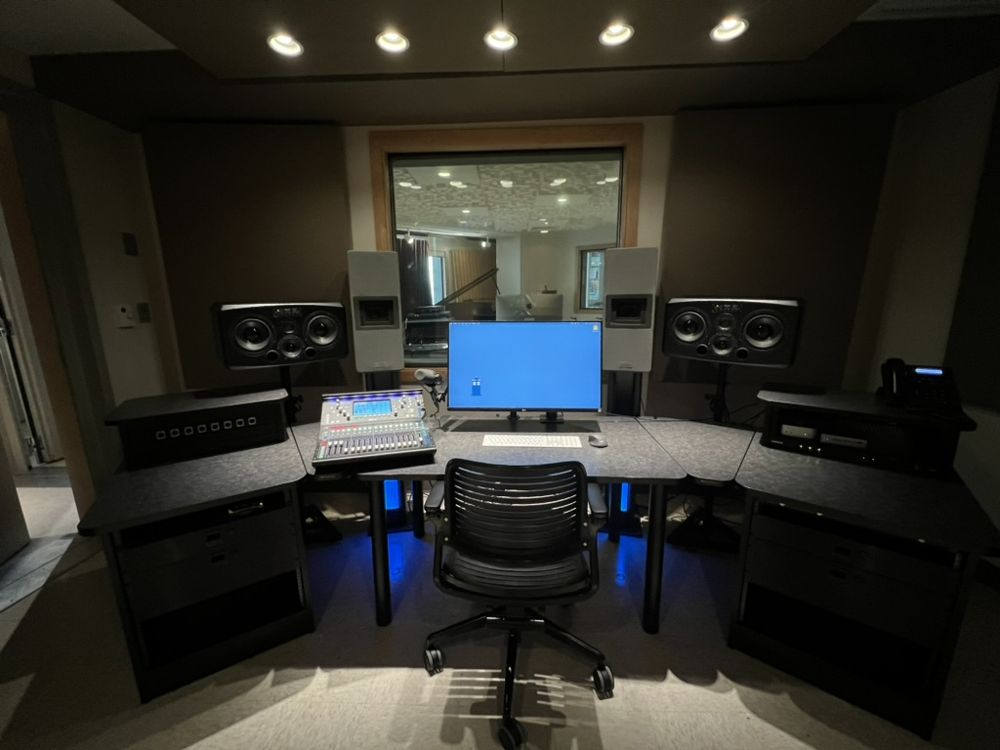

PETER IRVING WOLD CENTER
TARDIS
The Technology, Acoustics, Research, Design and Instructional Studio: a low noise floor recording studio and acoustics lab for recording, mixing, sound design, and research.
Explore TARDIS